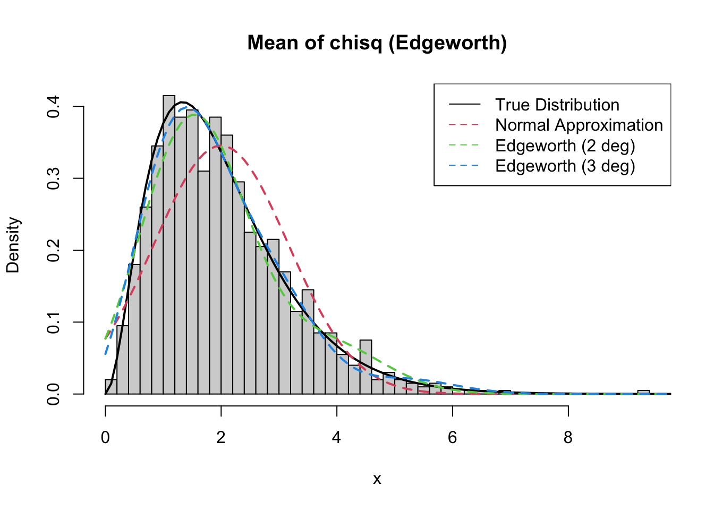

Edgeworth expansion is an improvement to the normal approximation that includes skewness (degree 2) and kurtosis (degree three). The first degree approximation amounts to the normal approximation.
Suppose we have a general distribution X_i with mean \mu and variance \sigma^2. If we standardize the sum, we have a statistic that is approximately N(0, 1)
\begin{aligned}
Z = \frac{1}{\sqrt{n}} \sum_i \frac{X_i - \mu}{\sigma}
\end{aligned}
Edgeworth expansion of the pdf of Z is
\lambda_r denotes the cumulant of Z, related to the cumulants of X_i by \lambda_r = \kappa_r / \sigma^r if cumulants of X_i are represented by \kappa_r
H_r are hermite polynomials.
We look at how well this approximation works for the sum of chisq random variables. The cumulants of the chisq variables.
Suppose X_i \sim \chi^2_2
If we study the mean, the true distribution is \bar{X_i} \sim \Gamma(\frac{n * df}{2}, \frac{n}{2}).
# Creating unified plot with all the hist(rand_x_mean, breaks=50, freq =FALSE, main ="Mean of chisq (Edgeworth)", xlab ="x")lines(x, true_y, lwd =2)lines(x, norm_approx_y, lty =2, col =2, lwd =2)lines(x, edgeworth_mean2(x, 3, 2, 4, 2), lty =2, col =3, lwd =2)lines(x, edgeworth_mean3(x, 3, 2, 4, 2, 6), lty =2, col =4, lwd =2)legend("topright", legend =c("True Distribution", "Normal Approximation", "Edgeworth (2 deg)", "Edgeworth (3 deg)"),col =c(1, 2, 3, 4), lty =c(1, 2, 2, 2))

3.1.1 R Packages
EW
does finite differencing for the moment estimators
only two functions, edgeworth and saddlepoint approximations
EQL (extended quasi likelihood)
does extended quasi-likelihood and saddlepoint approximations too
in my opinion, very well written and clear readable code. Used source code to figure out my own errors.
Code
library(EQL)# Usage for our exampleew <-edgeworth(x, n =3, mu =2, sigma2 =4, rho3 =2, rho4 =6, type ="mean", deg =3)# They match with our resultshist(rand_x_mean, breaks=50, freq =FALSE, main ="Mean of chisq (Edgeworth)", xlab ="x")lines(x, true_y)lines(x, edgeworth_mean3(x, 3, 2, 4, 2, 6), col =2)lines(x, ew$approx, lty =2, lwd =2, col =3)